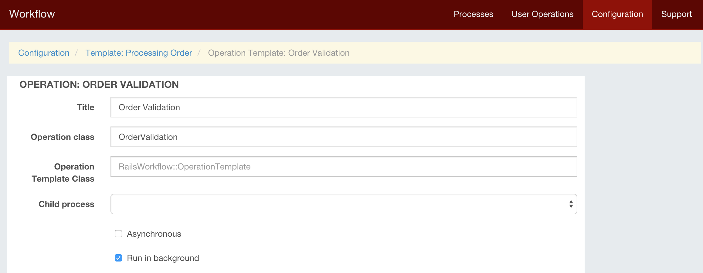

Tutorial: Creating process workflow in Rails application
Here I am going to explain how to use rails_workflow gem to build complex business logic in your Rails application. I wanted to create one big tutorial but then decided to split it to several posts describing one demo application.
You can download demo application here. Please note that there is database dump (db/dump.sql). I will update this application according to tutorial updates. Installation is described here.
I scaffolded Product, Order and OrderLine for that demo application. I am not trying to create real world application so those scaffolds is just to allow us to configure and create processes. I will not describe product and order in details - you can check commit 'Order and Product scaffolds' if you need to check anything but this is just dummy models to demonstrate workflow.
Create few products so that customers will be able to creat orders. You just need to specify name, stock quantity and minimum quantity for any product. We will use minimum quantity later when we will add stock provisioning process. Or you can use dump I added to commit.
When everything is installed, navigate to http://localhost:3000/workflow/ and click 'Processes'. You should see something like that:

Click 'Configuration' You will see empty list of process templates.
Click on 'Add Process Template' and create new one. Only thing you need to fill in 'New Process Template' form is it's title. Fill it with 'Processing Order' and click 'Save'.

When customer creates new order, system starts process for it. First it validates order positions to check if they are valid (since this is example application we will fail that validation). If order validation fails, system creates user operation for sales team to correct order (for example contact customer and update order lines).
Click 'Add Operation' and select 'Default Operation' from operations list. Fill new operation title with 'Order Validation' and set operation class to 'OrderValidation'.

Each operation has context which we can use to store and propagate some variables between operations. I will describe context in details in separate post but here just let's say that we added orderValid = false to operation context. We will use it in next operation.
class OrderValidation < RailsWorkflow::Operation
def execute
self.data[:orderValid] = false
save
end
end
The only thing this operation doing is setting orderValid to false.
Later we will modify this process and create child process for postponed order if some order positions are absent in stock right now. When they will be delivered to warehouse that postponed orders will start. But right now there will be simple user operation to correct order information.
On process template click 'Add Operation' and select 'Operation for User by Role'. Set Role to 'Sales Team', title to 'Correct Invalid Order Information', operation class to 'ProcessInvalidOrder' and operation template class to 'ProcessInvalidOrderTemplate'.

In dependencies check "Order Validation" and "Done" state. This way when "Order Validation" will be completed and get "Done" state ProcessInvalidOrderTemplate's resolve_dependency will get that operation to calculate if it need to create new operation.
class ProcessInvalidOrderTemplate < RailsWorkflow::OperationTemplate
...
def resolve_dependency operation
!operation.data[:orderValid]
end
end
We always set orderValid to false - resolve_dependency will always return true and process will create 'Correct Invalid Order Information'. Lets fill User instructions with 'This order has some invalid positions!'. We will show that instruction when user will pickup that operation.
Click 'Save'.
Next operation will reserve ordered positions in stock. Add another default operation to our process: 'Reserve Stock Positions'. Important to note that you need to check 'Order Validation' with 'Done' status and 'Correct Order Information' with 'Done' status.

When any of these operations completed with 'Done' status - ResolveStockPositionsTemplate will check if context orderValid = true and create new operation. If first operation had orderValid = false and second operation completed having orderValid = true - then this operaiton will be created after second operation.
Dependency resolution is very simple in Rails Workflow engine: when operation is completed process searches for operation templates, depending on this operation and it's current state. For every found operation (template) it checks if resolve_dependency returns true - and creates new operation in that case. This way you can add any conditions you may need including some database records validation, operations context and any other conditions you may need.
Right now your process template looks like this:

Now update OrdersController's create method:
def create
@order = Order.create(
order_params.merge(customer: current_user)
)
create! do |success, failure|
success.html do
process_template_id = 1
RailsWorkflow::ProcessManager.start_process(
process_template_id , { resource: resource }
)
redirect_to orders_path
end
end
endNow we can test everything. If you used dump.sql then you already have all users you need. Otherwise you can run rake seed taks to create all necesssary users:
bundle exec rake db:seed
Click on 'Create New Order', fill order lines with some numbers and click 'Create Order'. This will create new order and start new process.
Navigate to http://localhost:3000/workflow/processes - you will see process 'Processing Order' with status 'In Progress'. Also here you can see that we have open user operation 'Correct Invalid Order Information'. Open operation means that it is not yet assigned to any specific user.
On a process page you can see process context, process operation, not yet created operations from process template - they all shown with their dependencies and other information. Here you can track your process.
Login as 'sales@test.com' (password 'Qwerty123') and navigate to 'User Operations' - here you will see new operation in 'Available' section. As you will start operation - it will be assigned to you. Available means that you can pickup that operation as it not yet assigned to specific user. Click on 'Start' button. You will be redirected to order show page. You will see operation title and instructions we added on operation template.
If you open views/orders/edit.html.slim - you will see that I am using current_operation helper to get current user operation. I will describe user operations in details in one of next posts. Here I want to note following things:
class ProcessInvalidOrderTemplate < Workflow::OperationTemplate
def build_operation operation
resource = operation.data[:resource]
operation.title += " ##{resource.id}"
operation.context.data.merge!({
url_path: :edit_order_path,
url_params: [resource]
})
end
...
end
As you can see we need to add url_path and url_params to user operation so that when user starts operation engine redirect that user to some resource.
In OrdersController's update method we check if 'Complete' button was clicked and completing operation.
def update
update! do |success, failure|
success.html do
if current_operation && (params['commit'] == 'Complete')
current_operation.complete
end
redirect_to root_path
end
end
end
I will describe all that in more details shortly so follow my twitter for updates.